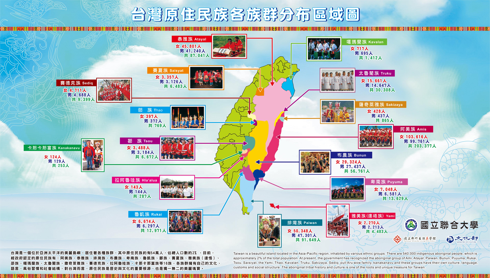
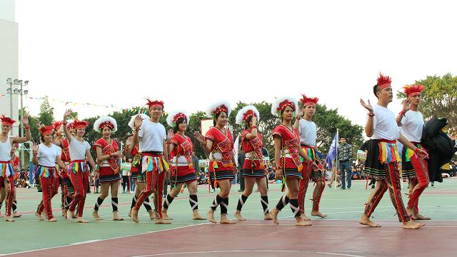

<!---->
<div class='csslider1 autoplay '>
	<input name="cs_anchor1" id='cs_slide1_0' type="radio" class='cs_anchor slide' >
	<input name="cs_anchor1" id='cs_slide1_1' type="radio" class='cs_anchor slide' >
	<input name="cs_anchor1" id='cs_slide1_2' type="radio" class='cs_anchor slide' >
	<input name="cs_anchor1" id='cs_play1' type="radio" class='cs_anchor' checked>
	<input name="cs_anchor1" id='cs_pause1_0' type="radio" class='cs_anchor pause'>
	<input name="cs_anchor1" id='cs_pause1_1' type="radio" class='cs_anchor pause'>
	<input name="cs_anchor1" id='cs_pause1_2' type="radio" class='cs_anchor pause'>
	<ul>
		<li class="cs_skeleton"></li>
		<li class='num0 img slide'> </li>
		<li class='num1 img slide'> </li>
		<li class='num2 img slide'> </li>
	</ul><div class="cs_engine"><a href="http://cssslider.com">http://cssslider.com</a> by cssSlider.com v2.1</div>
	<div class='cs_description'>
		<label class='num0'><span class="cs_title"><span class="cs_wrapper">43周年原民進場</span></span></label>
		<label class='num1'><span class="cs_title"><span class="cs_wrapper">風箏節</span></span></label>
		<label class='num2'><span class="cs_title"><span class="cs_wrapper">育達社團會</span></span></label>
	</div>
	<div class='cs_play_pause'>
		<label class='cs_play' for='cs_play1'><span><i></i><b></b></span></label>
		<label class='cs_pause num0' for='cs_pause1_0'><span><i></i><b></b></span></label>
		<label class='cs_pause num1' for='cs_pause1_1'><span><i></i><b></b></span></label>
		<label class='cs_pause num2' for='cs_pause1_2'><span><i></i><b></b></span></label>
		</div>
	<div class='cs_arrowprev'>
		<label class='num0' for='cs_slide1_0'><span><i></i><b></b></span></label>
		<label class='num1' for='cs_slide1_1'><span><i></i><b></b></span></label>
		<label class='num2' for='cs_slide1_2'><span><i></i><b></b></span></label>
	</div>
	<div class='cs_arrownext'>
		<label class='num0' for='cs_slide1_0'><span><i></i><b></b></span></label>
		<label class='num1' for='cs_slide1_1'><span><i></i><b></b></span></label>
		<label class='num2' for='cs_slide1_2'><span><i></i><b></b></span></label>
	</div>
	<div class='cs_bullets'>
		<label class='num0' for='cs_slide1_0'> <span class='cs_point'></span>
			<span class='cs_thumb'></span></label>
		<label class='num1' for='cs_slide1_1'> <span class='cs_point'></span>
			<span class='cs_thumb'></span></label>
		<label class='num2' for='cs_slide1_2'> <span class='cs_point'></span>
			<span class='cs_thumb'></span></label>
	</div>
</div>

<div id="news"></div>

<table id="newnews">
	<caption><h3>獎助學金</h3></caption>
	<tr><td>2016-09-12</td><td><a href="http://www.nuu.edu.tw/UIPWeb/wSite/ct?xItem=89345&ctNode=15383&mp=28">原住民學生(原民會)獎助金申辦流程(105/9/12至105/10/16)<a/></td></tr>
</table>
